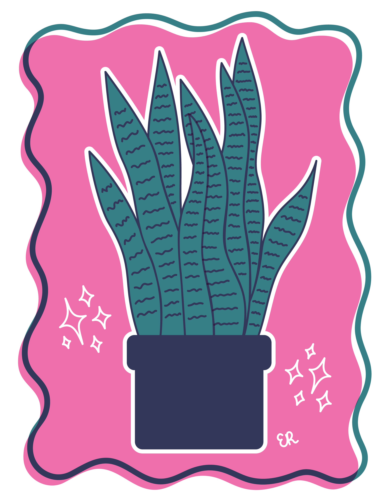

A Handmade Web
I evoke the term ‘handmade web’ to suggest slowness and smallness as forms of resistance.
I evoke the term ‘handmade web’ to suggest slowness and smallness as forms of resistance.
Link to site!
dog
cat
